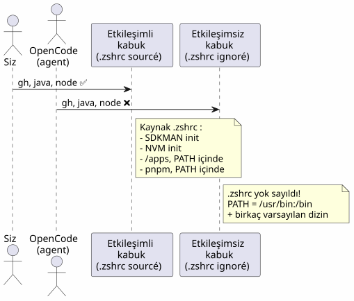
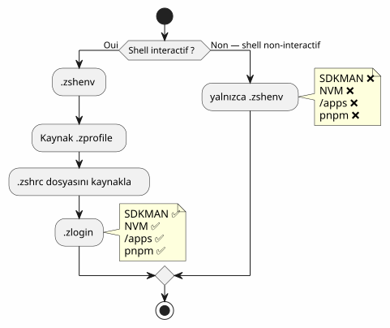
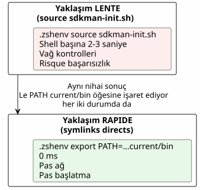
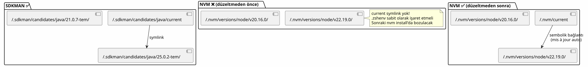
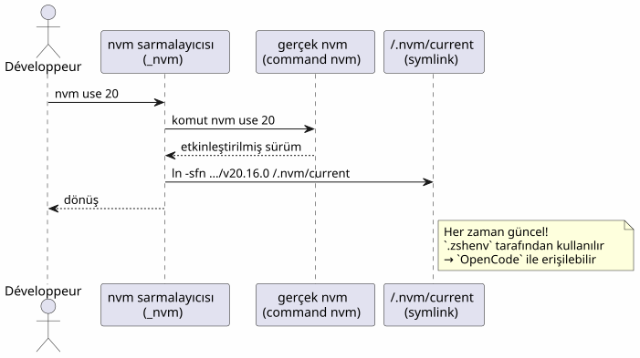
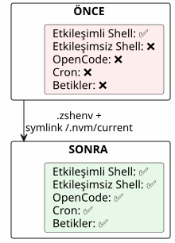

OpenCode et le PATH incomplet : pourquoi vos outils n'étaient pas dans le shell de l'agent
Yayınlandı: 21 April 2026
- Sahne: araçlar dünyasında kör bir ajan
- Hatanın anatomisi: iki shell, iki dünya
- Suçlular: .zshrc vs .zshenv
- Adım adım teşhis
- Çözüm: .zshenv + doğru yollar
- NVM vakası: sürüm yöneticisi iz bırakmayı unuttuğunda
- Yolların özet tablosu
- Tuzaklar ve azaltma önlemleri
- Öğrenilen dersler
- Son doğrulama
- Bağlantılar
OpenCode’u terminalinizde başlatıyorsunuz, her şey çalışıyor. Ajan bir … deniyor`gh`— bulunamadı. Bir`java -version`— yok. Bir`node`— hiçbir yerde. Oysa bu araçlar sizin shell’inizde gerçekten var. Sorun ne? OpenCode shell’leri başlatıyoretkileşimsizsizin … asla okumayan`.zshrc`. İşte bunu düzgün bir şekilde nasıl teşhis edip düzelteceğiniz.
Sahne: araçlar dünyasında kör bir ajan
Bir salı akşamıydı. Az önce kurmuştumhttps://opencode.ai[OpenCode], kodlama şeklimi dönüştürmeyi vaat eden yapay zekâ ajanı. İlk test: ona GitHub depolarımı listelemesini istemek.
$ opencode
> Utilise gh pour lister mes repos
❌ bash: gh: command not foundGarip.`gh`terminalimde mükemmel çalışıyordu. Başka bir şey deniyorum:
> Vérifie la version de Java
❌ bash: java: command not foundSonra :
> Lance le build Gradle
❌ bash: gradle: command not foundJava, Gradle, Node,gh— her şey ajan için görünmezdi. Benim terminalim ise her şeyi görüyordu. Sanki ajan ve ben iki paralel dünyada yaşıyorduk.
Anlamam saatlerimi aldı. Saatlerce`echo $PATH`, de which java, artan hayal kırıklığı. Sonunda sorunun araçlar olmadığını anladım — okabuk. OpenCode, alt süreçler başlatan her ajan gibi, shell’lerde çalışıretkileşimsiz. Ve Zsh, o shell’lerde, sizin tamamen görmezden gelir`.zshrc`.
Aşağıdakiler bu teşhisin, çözümün ve çıkardığım dersin tam hikâyesidir. Bir yapay zekâ ajanı kullanıyorsanız — OpenCode, Aider, Cursor ve hatta cron betikleri — bu sorun bir gün sizi de ilgilendirecek.
Hatanın anatomisi: iki shell, iki dünya
Bir terminal açtığınızda, Zsh onu bir kabuk olarak işler.etkileşimli. O yüklüyor`.zshrc`, her şeyi başlatan: SDKMAN, NVM, pnpm, takma adlar, güzel isteminiz. Ortamınız eksiksiz.
Ancak OpenCode bir komut çalıştırdığında, etkileşimli bir terminal başlatmaz. Bir kabuk başlatır.etkileşimsiz— bir görev kabuğu, ekranın arkasında insan olmadan. Ve Zsh, bu bağlamda atlar`.zshrc`. O sadece okur`.zshenv`.
Bu ayrım neden var? Çünkü etkileşimsiz bir kabuk, betikleri çalıştırmak için tasarlanmıştır, insan bir kullanıcıya hizmet etmek için değil. Arka planda çalışan bir betikte takma adları, komut istemini ve tamamlamaları yüklemek israf olurdu. Sorun şu ki, PATH’iniz — çalıştırılabilir dosyaları bulmak için en kritik bilgi — genellikle içinde başlatılır`.zshrc`, içinde değil`.zshenv`.

Sorunun kökü:Zsh, .zshrc dosyasını yalnızca etkileşimli kabuklar için source eder. OpenCode, alt süreçler başlatan her yapay zekâ ajanı gibi etkileşimsiz kabuklar kullanır. Bu kabuklar yalnızca`.zshenv`.
Suçlular: .zshrc vs .zshenv
Zsh şunlara sahiptir:dört başlatma dosyası, her biri belirli bir role sahip. Bu zarif bir tasarım — ama aynı zamanda sorunun düğüm noktası:
| Dosya | Kaynak belirtildiğinde | Rol | PATH’i değiştir? |
|---|---|---|---|
|
Her zaman(etkileşimli + etkileşimsiz + giriş) |
Temel ortam değişkenleri, PATH |
✅ Evet — bu ONUN yeri |
|
Yalnızca oturum açma kabukları |
Yavaş komutlar (oturum başına bir kez) |
Mümkün |
|
Yalnızca etkileşimli kabuklar |
Takma ad, istem, tamamlama, etkileşimli araçlar |
❌ Kritik değişkenler için değil |
|
Giriş shell’leri (.zshrc sonrası) |
Karşılama mesajları, tamamlama |
Nadiren |
Tablo bir ipucu veriyor, ancak bunu derinlemesine anlamak gerekir. Bir evin odaları gibi düşünün:
-
.zshenv-dirgiriş holü— Herkes buradan geçer, ister ziyaretçi ister yerleşik olsun. Buraya bir şey koyarsanız, her shell bunu görebilir. -
.zshrc…dırsalon— oraya yalnızca sakinler (etkileşimli kabuklar) girer. Ziyaretçiler (etkileşimli olmayan kabuklar) salonda kalır. -
.zprofileet `.zlogin`login shell’leri için özelleşmiş parçalardır (SSH ile bağlandığınızda olduğu gibi).
Trajedi şu ki, çoğumuz PATH’i salona koyuyoruz. Ve yapay zekâ ajanı ise oraya asla girme hakkına sahip değil.
Sorun tek bir diyagramda:

Bir terminal açtığınızda, Zsh etkileşimlidir: okur`.zshrc`, her şey çalışıyor. OpenCode bir komutu çalıştırmak için bir kabuk başlattığında, Zsh etkileşimsizdir: atlar`.zshrc`, yalnızca okur`.zshenv`. Et si .zshenv`mevcut değil veya `PATH içermiyor — burası çöl.
|
Zsh bunu neden yapıyor?Bu, Unix’ten miras kalan bir tasarım tercihidir. Etkileşimsiz bir kabuk olmalıdırhızlı et yeniden üretilebilir. SDKMAN’ın alias’larını, renkli istemlerini ve ağır başlatmalarını bir cron betiğine veya bir yapay zeka ajanına yüklemek yavaş ve kırılgan olurdu. Dolayısıyla ayrım mantıklıdır:`.zshenv`büyük ölçüde (değişkenler, PATH),`.zshrc`konfor için (takma adlar, prompt, tamamlayalım). Sorun, asıl olanı konforun içine koyduğumuzda ortaya çıkar. |
Adım adım teşhis
Düzeltmeden önce, tam olarak neyin eksik olduğunu anlamak gerekir. İşte tekrarlanabilir bir tanılama yöntemi — yapay zeka ajanlarıyla çalışıyorsanız bunu favorilere ekleyin.
1. Ajanın PATH’ini kontrol edin
Etkileşimli terminalinizin gördüğü şeyi, etkileşimsiz bir kabuğun gördüğü şeyle — yani OpenCode’un gördüğü şeyle — karşılaştırıyoruz.
# Dans votre terminal interactif (tout fonctionne)
echo $PATH | tr ':' '\n' | grep -v '^/usr' | sortTipik sonuç:
/home/cheroliv/apps
/home/cheroliv/.nvm/versions/node/v22.19.0/bin
/home/cheroliv/.sdkman/candidates/java/current/bin
/home/cheroliv/.sdkman/candidates/gradle/current/bin
/home/cheroliv/.local/share/pnpm
/home/cheroliv/.local/binŞimdi, ajanın gördüğünü simüle edelim — etkileşimsiz bir kabuk:
# Shell non-interactif : pas de .zshrc
zsh -c 'echo $PATH' | tr ':' '\n' | grep -v '^/usr' | sortSonuç:
/home/cheroliv/.local/binAltı yoldan beşi kayboldu.Ajanın çevresinin %83’ü elinden alınmış. Bu, sizden mutfak gereçlerinizin yarısı olmadan yemek yapmanızı istemek gibi bir şey — su kaynatabilirsiniz ama başka pek bir şey yapamazsınız.
|
Sipariş`zsh -c 'echo $PATH'`sizin1 numaralı tanı aracı. Günlük olarak kullandığınız bir araç sonuçta yoksa, yapay zekâ ajanınız da onu göremeyecektir. Onu her değişikliğinden önce ve sonra test edin`.zshenv`. |
2. .zshrc’de olan fakat .zshenv’de olmayanı belirleyin
Şimdi, suçluyu içinde arıyoruz`.zshrc`. Araçlarımızdan bahseden satırları filtreliyoruz:
grep -n 'apps\|SDKMAN\|NVM\|PNPM\|PATH' ~/.zshrcTipik olarak şunlar bulunur:
119: PATH="/usr/bin/python3:$HOME/apps:$PATH" # ← pas exporté !
171: export NVM_DIR="$HOME/.nvm"
172: [ -s "$NVM_DIR/nvm.sh" ] && \. "$NVM_DIR/nvm.sh" # ← NVM init
176: nvm use --lts --silent # ← active une version
179: export PNPM_HOME="/home/cheroliv/.local/share/pnpm"
187: export SDKMAN_DIR="$HOME/.sdkman"
188: [[ -s "$HOME/.sdkman/bin/sdkman-init.sh" ]] && source "$HOME/.sdkman/bin/sdkman-init.sh"Bütün bunlargörünmezOpenCode için. Ve`PATH`119. satırın bile değil`export`é — mevcut kabuğu asla terk etmez. Bu kritik bir teknik ayrıntıdır: bir değişken … olmadan`export`onu tanımlayan kabuğa özgü kalır. Alt kabuklar — OpenCode tarafından başlatılanlar gibi — bunu asla devralmaz.
3. .zshenv dosyasının var olup olmadığını kontrol edin
cat ~/.zshenv 2>/dev/null || echo "FICHIER ABSENT"Yanıt « DOSYA YOK » ise, her şey işte orada belirlenir.
Çözüm: .zshenv + doğru yollar
Strateji basit, ancak hassasiyet gerektiriyor: içine koymak`.zshenv` yalnızcatemel yolları, ağır başlatma betiklerini source etmeden. Taşımıyoruz`.zshrc`içinde`.zshenv`— özü çıkarılır.
Tüm temel yollarla .zshenv oluştur
.zshenv-dirtek dosyaZsh’in içinde source etmeyi garanti ettiğitümübağlamlar. PATH’in gitmesi gereken yer burasıdır.
export SDKMAN_DIR="$HOME/.sdkman"
export NVM_DIR="$HOME/.nvm"
export PNPM_HOME="$HOME/.local/share/pnpm"
export PATH="$HOME/apps:$HOME/.sdkman/candidates/java/current/bin:$HOME/.sdkman/candidates/gradle/current/bin:$HOME/.nvm/current/bin:$PNPM_HOME:$HOME/.local/bin:$HOME/.local/share/JetBrains/Toolbox/scripts:/usr/bin/python3:$PATH"|
Kullanılır`$HOME/.nvm/current/bin`ve değil`$HOME/.nvm/versions/node/v22.19.0/bin`. Nedeni: Node sürümleri değişir. Sabit kodlanmış bir yol bir sonraki seferde yanlış hale gelir. |
Neden .zshenv’de source sdkman-init.sh değil?
En cazip yaklaşım, basitçe içinde yeniden üretmek`.zshenv`içinde yaptığımız şey`.zshrc`— başlatma betiklerini source etmek. Bizolabiliryapma cazibesine kapılmak:
# ❌ MAUVAISE IDÉE
[[ -s "$HOME/.sdkman/bin/sdkman-init.sh" ]] && source "$HOME/.sdkman/bin/sdkman-init.sh"Sorunlar:
-
Yavaş : `sdkman-init.sh`her kabukta ağ çözümlemeleri ve kontroller yapar. Etkileşimsiz bir kabukta bu gereksiz bir maliyettir.
-
Kırılgan: SDKMAN etkileşimli bir bağlam bekler. Başlatılması bir pipe veya alt kabukta sessizce başarısız olabilir.
-
Gereksiz: SDKMAN adaylarını içine yerleştirir`~/.sdkman/candidates/<tool>/current/bin`— etkin sürüme işaret eden kararlı sembolik bağlantılar. Bunları kullanabilirizdoğrudan.
Doğru yaklaşım: SDKMAN’in başlatılmasını atlatmak ve doğrudan sembolik bağlantılara işaret etmek`current`. Tüm çözümün anahtarı budur:başlatma kodu yerine dosya yapısını sözleşme olarak kullanmak.

NVM vakası: sürüm yöneticisi iz bırakmayı unuttuğunda
NVM sorunu
Soruşturmanın beni en ileriye götürdüğü yer burası. SDKMAN zarif bir tasarıma sahip: birisi yaptığında`sdk install java 25.0.2-tem`, bir sembolik bağlantı oluşturur:
~/.sdkman/candidates/java/current -> ~/.sdkman/candidates/java/25.0.2-temBu symlinkher zaman güncel. İçinde üzerine gelin`.zshenv`ve hangi shell olursa olsun korunuyorsunuz. Güzel.
NVM, o, yaratmazhiçbir şeytelefon. Symlink yok`current`. Kararlı bir çapa noktası yok. Şuna benzeyen, sabit kodlanmış sürümlenmiş bir yolu işaret etmemiz gerekiyor:
~/.nvm/versions/node/v22.19.0/bin/nodeBir sonraki`nvm install 24`, bu yol ölü. Sizin`.zshenv`artık etkin sürüm olmayan bir sürümü işaret edecek. Bu bir saatli bomba.
|
NVM neden bunu yapıyor?NVM, PATH’i her seferinde dinamik olarak değiştirerek çalışır`nvm use`. Sık sık sürüm değiştiren geliştiriciler için etkileşimli bir kabukta tasarlanmıştır. Sembolik bağlantı`current`başlangıçtaki spesifikasyonlarda yoktu — bu, kendimizin düzelteceği bir tasarım ihmalidir. |

Çözüm: NVM için current symlink’ini oluşturmak
NVM bunu yapmadığı için bunu kendimiz yapıyoruz. İlke SDKMAN ile aynı — bir symlink`current`her zaman etkin sürüme işaret eden. Bir kez oluşturulur, ardından kendi kendine güncellenmesi için otomatikleştirilir.
# Créer le symlink initial
ln -sfn "$HOME/.nvm/versions/node/v22.19.0" "$HOME/.nvm/current"Şimdi, içinde`.zshenv`, kullanılır:
$HOME/.nvm/current/binYerine:
# ❌ Chemin en dur — cassé au prochain changement de version
$HOME/.nvm/versions/node/v22.19.0/binSymlink’in güncellenmesini otomatikleştir
Bir symlink kendini güncellemiyorsa hiçbir işe yaramaz. Symlink`current`yapıldığında güncellenmelidir`nvm use` ou nvm install. Çözüm: birsarmalayıcı— gerçek komutu saran bir fonksiyon`nvm`ve her çağrıdan sonra symlink’i günceller.
# À la fin de .zshrc, APRÈS le chargement de NVM
nvm use --lts --silent
ln -sfn "$(nvm_version_path "$(nvm current)")" "$NVM_DIR/current"
_nvm() {
command nvm "$@"
local rc=$?
ln -sfn "$(nvm_version_path "$(nvm current)")" "$NVM_DIR/current"
return $rc
}
alias nvm='_nvm'Ayrıntılı olarak nasıl çalışır:

Sarmalayıcı`_nvm`gerçek komutu çağırır`nvm`, ardından symlink’i günceller. Takma ad`nvm='_nvm'`yazarak sağlar`nvm`, wrapper üzerinden geçiyoruz. Ve shell başlatılırken de sonrasında aynısını yapıyoruz`nvm use --lts`.
|
`nvm_version_path`NVM’nin bir sürümün tam yolunu çözen dahili bir işlevidir. Bu, yolu elle yeniden oluşturmayı önler. |
Yolların özet tablosu
Tuzaklara geçmeden önce, dönüşümün görsel bir özeti. Solda, sahip olduğunuz şey (her şey … içinde`.zshrc`, ajan için görünmez). Sağda, şu anda sahip olduğunuz şey (içindeki temel yollar`.zshenv`, her yerde görünür).
| Araç | Önce (yalnızca .zshrc) | (.zshenv + symlink) sonrasında | OpenCode tarafından görünür mü? |
|---|---|---|---|
|
PATH .zshrc içinde dışa aktarılmadı |
|
✅ |
SDKMAN Java |
|
|
✅ |
SDKMAN Gradle |
|
|
✅ |
NVM Node |
|
|
✅ |
pnpm |
|
|
✅ |
JetBrains Toolbox |
Toolbox tarafından .zshrc içine otomatik olarak eklendi |
|
✅ |
Python 3 |
`/usr/bin/python3`PATH içinde .zshrc |
Açıkça |
✅ |
Tuzaklar ve azaltma önlemleri
Bu yaklaşımda her şey mükemmel değil. İşte karşılaştığım sorunlar ve bunları nasıl atlatacağım.
| Tuzak | Açıklama | Azaltma |
|---|---|---|
PATH çoğaltıldı |
Eğer .zshenv ve .zshrc aynı yolu eklerse, iki kez görünür |
`.zshenv`kaynaklıdırönce.zshrc. Her ikisi de etkileşimli bir kabukta okunur. PATH’te yinelenen girdiler olabilir. Bu kozmetiktir, işlevsel değildir. Bundan kaçınmak için: .zshenv içine yalnızca varsayılan PATH’te bulunmayan yolları koyun. |
NVM: .zshenv içinde sabit kodlanmış sürüm |
Koymak`~/.nvm/versions/node/v22.19.0/bin`sabit kodlanmış, bir sonrakinde yanlış hale gelir`nvm install` |
symlink’i kullan`$HOME/.nvm/current/bin`+ sarmalayıcı`_nvm`.zshrc içinde |
SDKMAN: .zshenv içinde sdkman-init.sh dosyasını source’la |
Yavaş, kırılgan, etkileşimsiz bir kabukta işe yaramaz |
Symlink’leri kullan`candidates/<tool>/current/bin`doğrudan |
Değişiklik sonrası takma ad eksik |
Sarmalayıcı`nvm='_nvm'`.zshrc içinde ancak yeniden yükleme sonrasında etkili olur |
Shell’i yeniden başlat veya`source ~/.zshrc` |
OpenCode değişiklikleri görmüyor |
Ajan, alt kabuklarını zaten eski .zshenv ile başlatmış. |
.zshenv` değiştirildikten sonra OpenCode’u yeniden başlat |
.zshenv aşırı yüklü |
Ağır fonksiyonları veya etkileşimli başlatmaları .zshenv içine koymak |
.zshenv = ortam değişkenleri + yalnızca PATH. Yok`source`, ağır işlevler yok, prompt yok. |
Öğrenilen dersler
-
.zshrc` etkileşimlidir,
.zshenvevrenseldir— Bir değişkenin tüm shell’lerde (AI ajanları, cron, betikler, IDE) var olması gerekiyorsa, o şuraya gider`.zshenv`. Salon rahat, ancak giriş holü herkesin geçtiği tek yerdir. -
Sürüm yöneticileri eşit değildir.— SDKMAN sembolik bağlantılar oluşturur`current`tasarım gereği. NVM hayır. Bu eksikliği manuel olarak gidermek gerekir. Bu önemli bir ders: PATH’inizi yapılandırmadan önce, yöneticinizin sabit bir bağlantı noktası sunup sunmadığını kontrol edin.
-
init betiklerini .zshenv içinde source etmeyin.—
sdkman-init.shet `nvm.sh`etkileşimli bir kabuk için tasarlanmışlardır. Etkileşimsiz bir bağlamda yavaş ve kırılgandırlar. Sembolik bağlantılar`current`yeterlidir ve anlıktır. -
Her zaman etkileşimsiz kabukta test edin.—`zsh -c 'echo $PATH'`bir ajanın tam olarak ne gördüğünü simüle eder. Bu doğrulama testidir. Bu test olmadan, yapılandırmanızın ajanlar için çalışıp çalışmadığını bilemezsiniz.
-
Wrapper deseni yeniden kullanılabilir.— Aynı desen`_nvm`+`alias nvm='_nvm'`PATH’i dinamik olarak değiştiren ve sabit bir iz bırakmayan her araç için geçerlidir. Fikir kutunuzda bir araç daha.

Son doğrulama
Oluşturduktan sonra`.zshenv`ve NVM sembolik bağlantısı, her şeyin çalıştığını doğrulayın — her iki bağlamda:
# Shell interactif (votre terminal)
gh --version && java -version && node --version# Shell non-interactif (simulation OpenCode)
zsh -c 'gh --version && java -version && node --version'Her ikisi de başarılı olmalı. Evet ise, yapay zeka ajanınız sizinle aynı araçları görecek. Aksi takdirde, adım adım tanılamaya geri dönün — muhtemelen bir yolu unuttunuz veya NVM symlink’i güncel değil.
|
Bu testi otomatikleştirin.Bu kontrolü, araçlarınızın her güncellemesinden sonra çalıştırdığınız bir sağlık kontrolü betiğine ekleyin. Bir`zsh -c 'which java && which node && which gh'`CI’da bu, sürprizlere karşı bir sigortadır. |
_ Etkileşimsiz bir kabuk sessiz bir misafir gibidir: yalnızca giriş kapısında gösterilen şeyi okur. PATH salonda ise onu asla görmez. _
Bağlantılar
Resmî dokümantasyon
-
Zsh dokümantasyonu: Başlangıç Dosyaları— Zsh başlangıç dosyaları hakkındaki resmi başvuru kaynağı. Her şey burada açıklanır, her ne kadar sık sık unutulsa da.
-
OpenCode : yapılandırma— OpenCode ve çalışma zamanı ortamı nasıl yapılandırılır.
Bahsedilen araçlar
-
GitHub’da NVM— Node Version Manager. Node.js sürüm yöneticisi.
-
SDKMAN — resmî site— SDKMAN! JVM (Java, Kotlin, Gradle…) için sürüm yöneticisi
-
SDKMAN : kurulum— SDKMAN kurulum kılavuzu.
-
gh` — GitHub CLI— GitHub’ın komut satırı aracı, her geliştirici için vazgeçilmez.
-
Gradle — resmî site— SDKMAN aracılığıyla kurduğumuz derleme sistemi.
-
pnpm — resmî site— Hızlı ve alan tasarruflu Node.js paket yöneticisi.
-
JetBrains Toolbox— Betiklerini PATH’e ekleyen JetBrains IDE yöneticisi.
Daha ileri gitmek için
-
Zsh dotfiles: kapsamlı bir rehber— Zsh dotfiles yönetimi hakkında derinlemesine bir makale.
-
ArchWiki’de Zsh— Zsh hakkındaki en iyi topluluk dokümantasyonlarından biri.
-
NVM GitHub sorunları— Symlink etrafındaki tartışmaları görmek için`current`ve PATH sorunları.